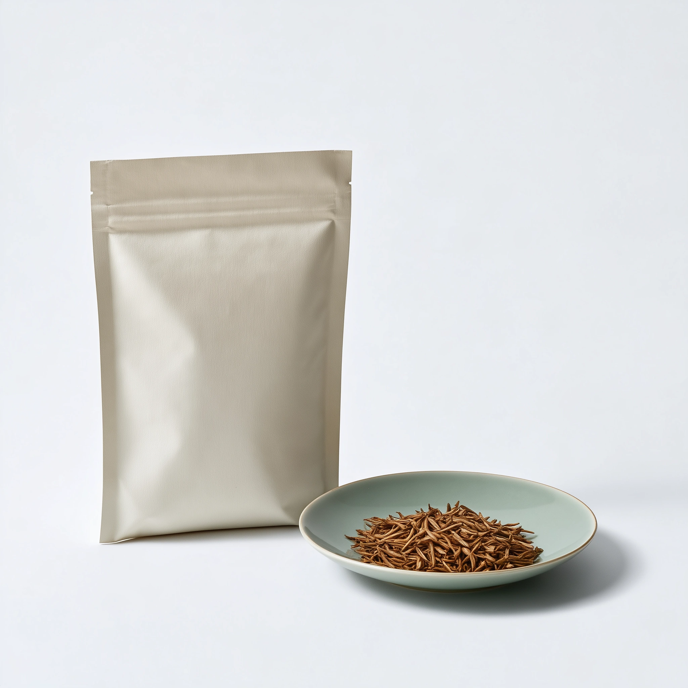
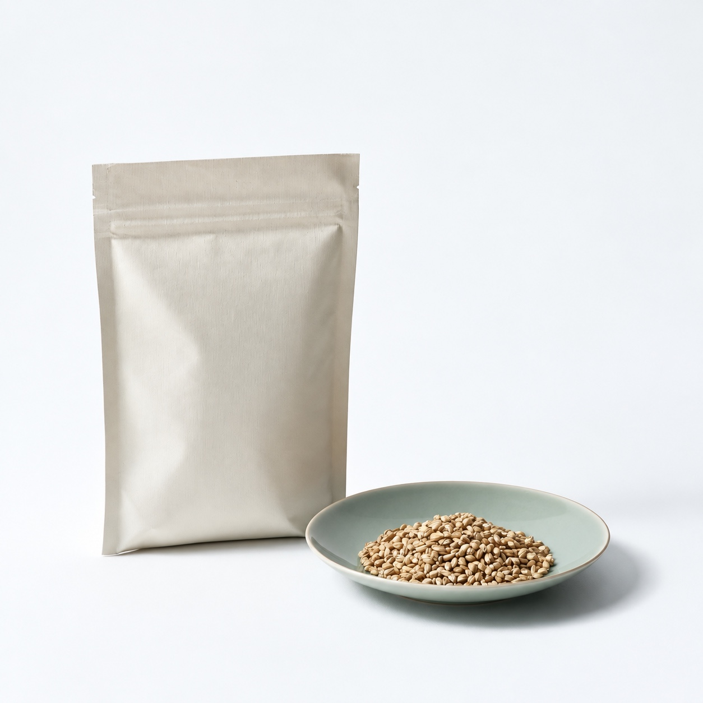
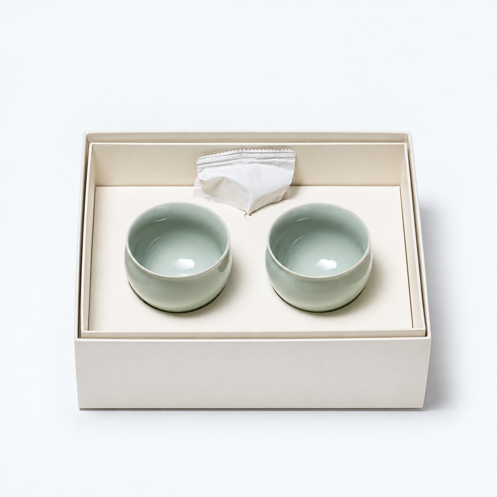
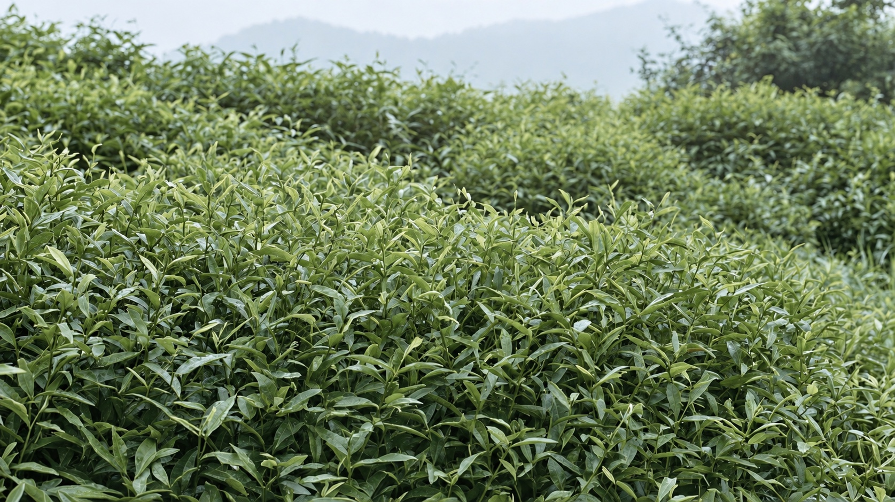
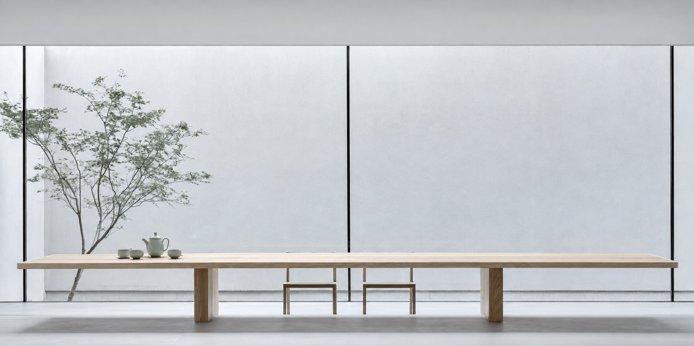

Objects find their place.
A few useful things. A little natural light. A place that feels like your own.
Find a momentUseful things for quiet mornings, unhurried afternoons and time together. Find a place to begin.

Tea, objects and pieces for the table. Collected around the way we spend our days.

Celadon porcelain

Celadon porcelain

Celadon porcelain

Celadon porcelain
A few useful things. A little natural light. A place that feels like your own.
Find a moment
Celadon porcelain

Celadon porcelain

Celadon porcelain

Celadon porcelain

Natural bamboo

Woven linen

Woven linen

Natural oak

Natural ash

Natural ash

Natural oak
Green tea study

Roasted tea study

Roasted barley study
White tea study

Two cups and loose-leaf tea

An everyday cup begins with a landscape, a leaf, and the attention given to both.
Follow the leaf
Celadon porcelain

Oak and celadon

Natural oak

A table to gather around. A chair by the window. Familiar forms, seen a little closer.
Explore the table
Natural ash
Two celadon cups and a paper pouch of loose-leaf tea. A small beginning for someone you make time for.
Explore gifting